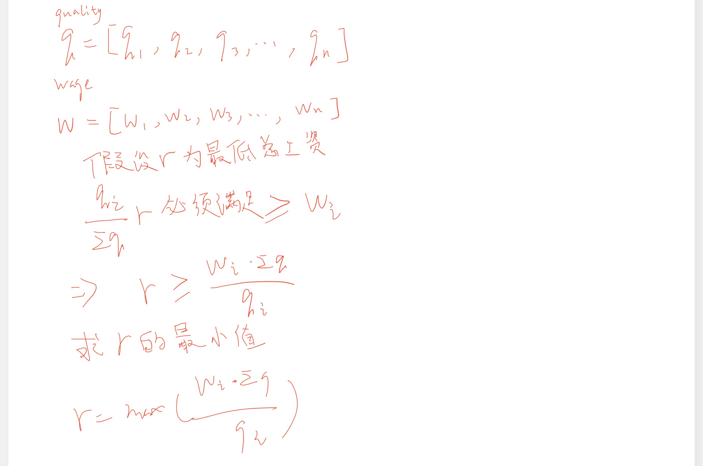

数学
雇佣 K 名工人的最低成本
√
有 n 名工人。 给定两个数组 quality 和 wage ，其中，quality[i] 表示第 i 名工人的工作质量，其最低期望工资为 wage[i] 。
现在我们想雇佣 k 名工人组成一个工资组。在雇佣 一组 k 名工人时，我们必须按照下述规则向他们支付工资：
对工资组中的每名工人，应当按其工作质量与同组其他工人的工作质量的比例来支付工资。 工资组中的每名工人至少应当得到他们的最低期望工资。 给定整数 k ，返回 组成满足上述条件的付费群体所需的最小金额 。在实际答案的 10-5 以内的答案将被接受。。
示例 1：
1 2 3 | |
示例 2：
1 2 3 | |
提示：
n == quality.length == wage.length
1 <= k <= n <= 104
思路
堆 
示例代码
1 2 3 4 5 6 7 8 9 10 11 12 13 14 15 16 17 | |
得到连续 K 个 1 的最少相邻交换次数
给你一个整数数组 nums 和一个整数 k 。 nums 仅包含 0 和 1 。每一次移动，你可以选择 相邻 两个数字并将它们交换。
请你返回使 nums 中包含 k 个 连续 1 的 最少 交换次数。
示例 1：
1 2 3 | |
示例 2：
1 2 3 | |
示例 3：
1 2 3 | |
提示：
1 <= nums.length <= 105
nums[i] 要么是 0 ，要么是 1 。
1 <= k <= sum(nums)
思路
设1的下标为\(p_0,p_1,…,p_m\)，将其中\(k\)个1(从\(i\)开始，到\(i+k-1\))搬到下标从\(q\)开始的位置则交换次数为：
\[
\sum_{j=i}^{i+k-1}{|q+j-i-p_j|} = \sum_{j=i}^{i+k-1}{|q-i-(p_j-j)|}
\]
这里\(i\),\(q\)是自变量
由于\(p_j-j\)非递减，那么要使交换次数取得最小值，则\(q-i\)等于\(\frac{p_j-j}{2}\)
设\(mid=\frac{p_j-j}{2}\),则
\[
\begin{aligned}
\sum_{j=i}^{i+k-1}{|q-i-(p_j-j)|}&=\sum_{j=i}^{mid-1}{(p_j-j)-(q-i)}+\sum_{j=mid}^{i+k-1}{(q-i)-(p_j-j)} \\
&=\sum_{j=i}^{mid-1}{-(q-i)}+\sum_{j=i}^{mid-1}{p_j-j}
\end{aligned}
\]
示例代码
1 2 3 4 5 6 7 8 9 10 11 12 13 | |